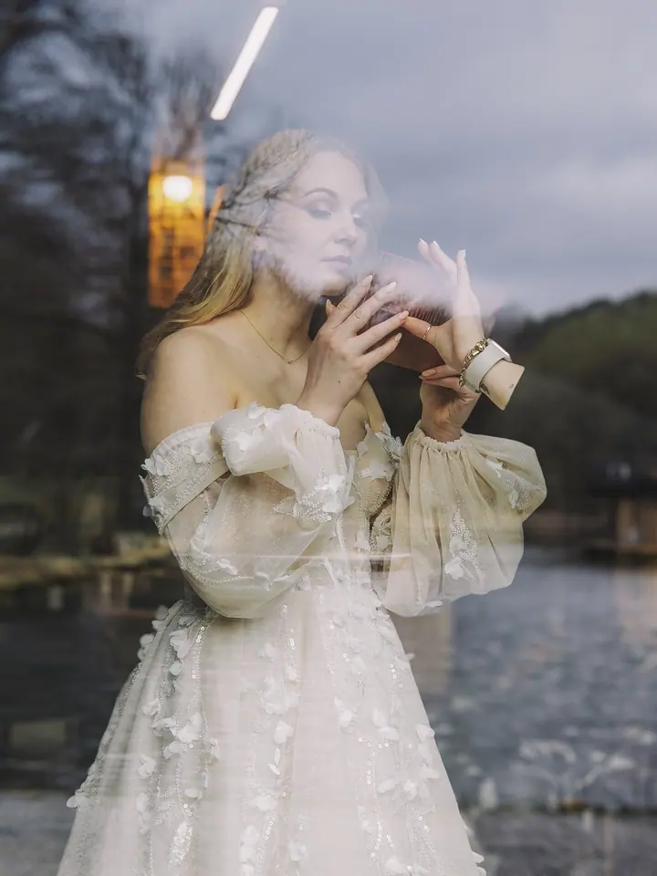
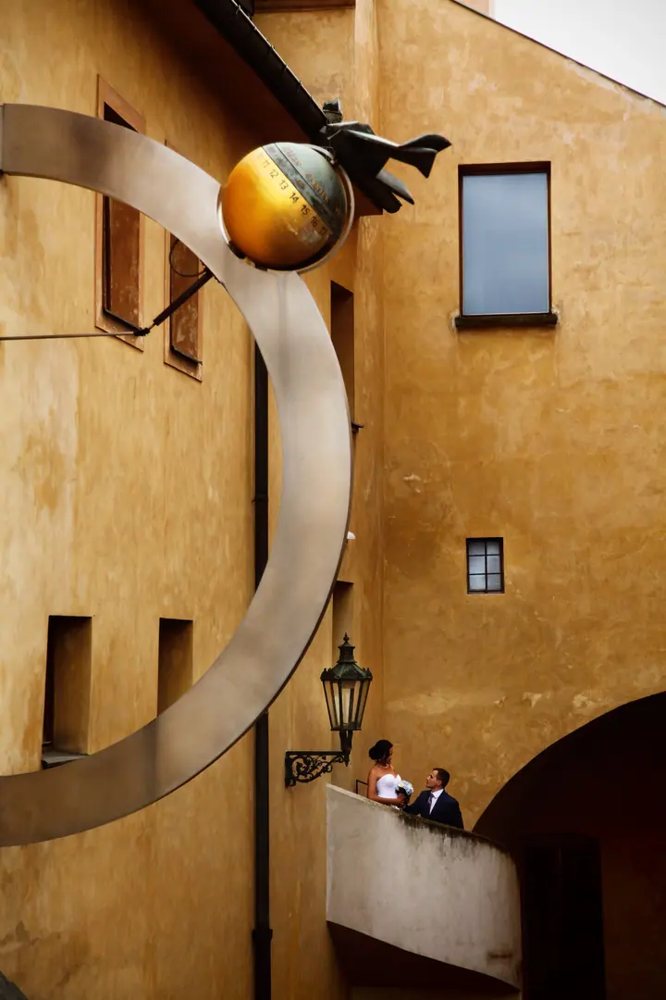

Svatby
Fotím svatby od příprav a detailů až po společné portréty v ulicích. Hledám zajímavé světlo, kontrast a atmosféru místa.

Fotografka svateb a portrétů malovaných světlem
Jmenuji se Galina Gordeeva a jsem fotografka, která se specializuje na malování světlem. Fotím svatby, portréty, rodiny i akty a vždy mi jde o atmosféru a výtvarný rukopis. Nejraději pracuji ve tmě, kde se ze světla stává štětec.
Zeptat se na termín
Fotím svatby od příprav a detailů až po společné portréty v ulicích. Hledám zajímavé světlo, kontrast a atmosféru místa.
Malování světlem, luminografie nebo light painting jsou názvy pro druh fotografie založený na dlouhém expozičním čase. Pohyb světel během expozice tvoří světelné obrázky a zároveň „vymalovává“ skutečné objekty. Protože to vyžaduje téměř absolutní tmu, fotím většinou v noci nebo pozdě večer.
Portréty tvořím v ateliéru i v exteriéru a vždy vznikají ve spolupráci s vámi. Hlavní roli hraje pomalost a soustředění, každý záběr trvá několik minut a nedá se zopakovat. Výsledkem jsou fotografie se silným výtvarným rukopisem, atmosférou a osobním příběhem.
Postprodukci držím na minimu: vyvolání RAWu, ořez a korekce kontrastu a barev. Ráda experimentuji, ať už jde o absurdní fine art s nadsázkou, scénické svícení, nebo kreativní produktové focení s ohněm, kouřem a vodou.
Napište mi, co máte na mysli: svatbu, portrét, rodinné focení nebo akt. Společně vybereme místo, čas a styl.
U kreativních projektů se dá kompozice předem naplánovat a načrtnout. Domluvíme se i na kostýmech, rekvizitách nebo líčení.
Při malování světlem zůstáváte 5 až 10 vteřin bez pohybu a já kolem vás světlem kreslím. Je to pomalejší proces, ale zážitek stojí za to.
Snímky upravuji jen minimálně, vyvolávám RAW, dolaďuji ořez, kontrast a barvy. Kouzlo vzniká už během samotného focení.
Každý záběr trvá několik minut, takže z hodinového focení si obvykle odnesete 2 až 8 výjimečných snímků.
Během expozice je potřeba zůstat bez pohybu 5 až 10 vteřin. Je to fyzicky i mentálně náročnější než běžné focení, ale vždy vás navedu.
Ano, u rodinných portrétů používám krátký záblesk a světelnou malbu doplňuji až po něm. Děti se tak nemusí dlouho soustředit a zvládnou to už od tří let.
Ano, nabízím dárkový poukaz. Portrét nebo akt malovaný světlem je originální dárek, který se dá vytisknout i na plátno.